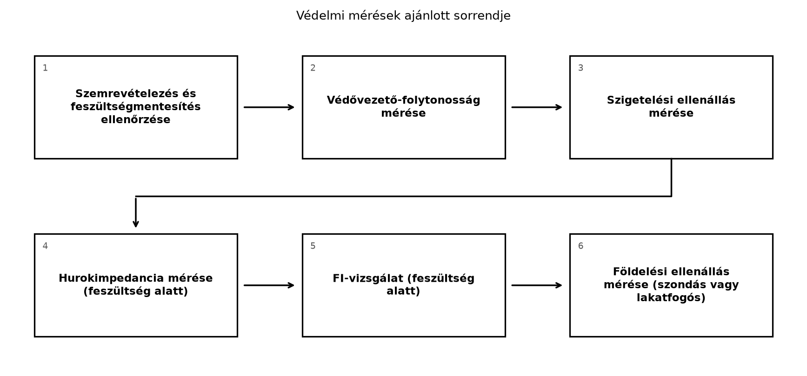

A szabványossági felülvizsgálat nem ér véget a szemrevételezéssel és a kapcsolási rajzok ellenőrzésével. Azt, hogy a hibavédelmi rendszer valóban megvédi az embert egy testzárlat vagy szigetelési hiba esetén, csak műszeres mérésekkel lehet igazolni. Ha a védővezető szakadt, a szigetelési ellenállás túl kicsi, a hurokimpedancia túl nagy, vagy az áram-védőkapcsoló nem old le, a berendezés látszólag működhet, de egy hiba esetén életveszélyes feszültség maradhat az érinthető fémrészeken. Ebben az alfejezetben a mérési gyakorlatok során használt védelmi méréseket végezzük el egy tanműhelyi modellen, a mért értékeket kiértékeljük, és kitöltjük a mérési jegyzőkönyvet úgy, ahogyan azt egy valós felülvizsgálaton is kell. A korábban megismert alapmérések (Alapmérések gyakorlata: feszültség, áram, ellenállás, teljesítmény) és a mérési jegyzőkönyv követelményei (Jegyzőkönyv, szabványossági felülvizsgálat és hibakeresés) itt válnak egyetlen, gyakorlatban használható folyamattá.
Képzeljünk el egy tanműhelyi elosztómodellt, amely egy lakáselosztót ábrázol. A modellben van egy bejövő hálózat (230/400 V), egy főkapcsoló, egy 30 mA névleges hibaáramú áram-védőkapcsoló (FI-relé), három kismegszakító (B16), és ezekről leválasztott áramkörök: egy világítási kör, egy konnektor kör, valamint egy motor a hozzá tartozó védővezetővel. A szerelő a mérőműszert a feszültségmentesítés után a PE-sín és a védővezető közé csatlakoztatja, megméri a védővezető folytonosságát, majd a szigetelési ellenállást, végül a feszültség visszakapcsolása után a hurokimpedanciát és az FI kioldási idejét. A mérési eredményeket rögzíti a jegyzőkönyvben, és összeveti a határértékekkel.
A védelmi mérések ajánlott sorrendjét egy folyamatábra szemlélteti:

A folyamatábrán látható, hogy a feszültségmentes méréseket különítjük el, és a feszültség alatti méréseket csak azután végezzük, miután a leválasztott állapotban lévő mérések mind megfeleltek.
Definíció. A védelmi mérés olyan villamos mérés, amely a hibavédelem és a kiegészítő védelem hatékonyságát igazolja. Ide tartozik a védővezető-folytonosság, a szigetelési ellenállás, a hurokimpedancia, az áram-védőkapcsoló kioldási vizsgálata és a földelési ellenállás mérése.
Szabály. A védelmi méréseket mindig a berendezés feszültségmentesítése után kezdjük, kivéve azokat a méréseket, amelyekhez hálózati feszültség szükséges (hurokimpedancia, FI-vizsgálat). A feszültség alatti méréseknél a mérőműszer bekötése csak a mérési pontokon történik, a vezetékek érintése tilos.
Összefüggés. A védővezető-folytonosság mérése során a mért ellenállásnak kicsinek kell lennie. Tanulási célként elfogadott határérték: rövid, legfeljebb néhány méteres vezetéknél, de a konkrét érték a vezeték hosszától és keresztmetszetétől függ. A hosszabb vezetékszakaszra a várható ellenállást az képlettel kell kiszámolni, és azzal összevetni.
Összefüggés. A szigetelési ellenállás mért értékének legalább nagyságúnak kell lennie a gyakorlatban, bár a szabvány műszaki táblázatai ennél szigorúbb, feszültségfüggő értékeket is adhatnak. A 230/400 V-os kisfeszültségű rendszerben a vizsgálati feszültség általában 500 V DC.
Összefüggés. A hurokimpedancia mérésekor a mért értékre teljesülnie kell a kioldási feltételnek:
ahol a fázisfeszültség, pedig a védelem kioldási árama (kismegszakítónál a zárlati kioldó árama, olvadóbiztosítónál a leolvasott olvadási áram). A feltétel biztosítja, hogy a hibaáram elegendő legyen a védelem automatikus lekapcsolásához a megengedett időn belül. Mérési korrekció. Mérésnél a hideg vezetőn mért értéket a melegedés és a feszültségtűrés miatt jellemzően 2/3–0,8-as tényezővel csökkentett határhoz hasonlítjuk (ellenőrizendő: MSZ HD 60364-6, a műszer kézikönyve); a könyv példáiban és jegyzőkönyv-mintáiban az egyszerűség kedvéért a korrekció nélküli határt használjuk, kivéve, ahol ezt külön jelezzük.
Összefüggés. Az áram-védőkapcsoló vizsgálatánál a névleges hibaárammal (pl. ) végzett mérésnél a kioldásnak meg kell történnie, és általános (nem késleltetett) típusú RCD-nél a kioldási idő -nél legfeljebb 300 ms, S típusúnál 130–500 ms (ellenőrizendő: MSZ EN 61008-1 / MSZ EN 61009-1). A 0,4 s a TN-rendszer 230 V-os végáramköreinek megengedett automatikus lekapcsolási ideje (MSZ HD 60364-4-41), amelyet az RCD a 300 ms-mal teljesít; a kettő nem ugyanaz a fogalom. A szigorúbb értékeket a szabvány táblázatai adják meg.
Szabály. A földelési ellenállás értéke a hálózati rendszertől és a védelmi módtól függ. TT-rendszerben a földelési ellenállásnak elég kicsinek kell lennie ahhoz, hogy a hibaáram kioldja a védelmet; TN-rendszerben a fázis–PE hurok fémesen, a PE/PEN vezetőn át záródik a transzformátor csillagpontjához, ezért a hurokimpedanciából nem határozható meg. TT-rendszerben a fázis–PE hurokimpedancia () felülről becsli -t. A földelési ellenállást 3-pólusú (szondás) vagy lakatfogós földelésmérővel mérjük.
Adott egy tanműhelyi modell, amelyben egy 5 m hosszú, 1,5 mm² réz védővezető köti össze a PE-sínt és a konnektor PE-érintkezőjét. A vezető fajlagos ellenállása .
Keresett: a védővezető várható ellenállása, és annak megítélése, hogy egy mért érték megfelelő-e.
Képlet:
Behelyettesítés:
A mért érték , ami nagyobb, mint a számított várható érték, de az átmeneti ellenállások (sorkapcsok, érintkezők) miatt még elfogadható lehet, ha a határértéket nem lépi túl. Tanulási célként alatti érték elfogadható, tehát a mérés megfelelő. Ha a mért érték ennél nagyobb lenne, akkor a kötést kell ellenőrizni.
Ellenőrzés: az egység , a nagyságrend a várt érték közelében van.
Adott egy B16 kismegszakítóval védett konnektor-áramkör. A gyártói adat szerint a kismegszakító zárlati kioldó árama . A hurokimpedancia-mérővel mért érték .
Keresett: a kioldási feltétel teljesül-e?
Képlet:
Behelyettesítés:
Mivel , a feltétel teljesül. Ha a mért érték például lenne, akkor a védelem nem oldana le a megengedett időn belül, és a kötések, a vezeték hossza vagy a védővezető keresztmetszete vizsgálandó.
Ellenőrzés: a számított határérték nagyobb, mint a mért érték, így a védelmi funkció megfelelő.
Szabvány. A kisfeszültségű villamos berendezések ellenőrzésére vonatkozó követelményeket az MSZ HD 60364-6 (a sorozat ellenőrzési része) tartalmazza. A mérőműszerekre vonatkozóan az MSZ EN 61557 sorozat adja meg a védelmi mérőműszerek pontossági és használati követelményeit. A gyakorlati mérés során használt készülékeknek rendelkezniük kell a megfelelő mérési kategóriával (CAT III 300 V vagy magasabb), és a mérési feladatnak megfelelő típusúaknak kell lenniük: szigetelésvizsgáló, hurokimpedancia-mérő, FI-vizsgáló, földelésmérő. A szabványok pontos műszaki táblázatait és határértékeit a mérés előtt a hatályos kiadásból kell ellenőrizni, mert azok időben változhatnak.
A mérések során a következő alapelveket kell betartani:
Egy lakásfelújítás során a szerelő a konnektorok védelmi mérését végezte. A folytonosság és a szigetelés megfelelt, de a hurokimpedancia-mérő a konnektornál értéket mutatott, miközben a B16-os kismegszakító határértéke . A FI 30 mA-es védőkapcsoló viszont rendben kioldott 25 ms alatt. A szerelő a hibát a kötődobozban egy lazán meghúzott, oxidált fázisvezető-kötésben (sorkapocsban) találta – ezt a PE-folytonosság mérés nem láthatta, mert csak a védővezetőt vizsgálja. A csavar meghúzása után a hurokimpedancia -ra csökkent, és a kioldási feltétel teljesült. A tanulság: a hurokimpedancia a teljes hibahurkot (fázisvezető, kötések, védővezető) ellenőrzi, ezért olyan hibát is kimutat, amelyet a PE-folytonosság mérés nem; a magas érték gyakran kötési hibára utal.
Cél: Védelmi mérések végrehajtása tanműhelyi modellen, az eredmények kiértékelése és a jegyzőkönyv kitöltése.
Eszközök és anyagok: installációs tesztkészülék (kisohmos mérés ≥ 200 mA, szigetelés, hurok, RCD – MSZ EN 61557; ellenőrizendő: aktuális kiadás) vagy külön kisohmos mérő, szigetelésvizsgáló (500 V DC), hurokimpedancia-mérő FI-méréssel kombinált változatban, földelésmérő (vagy lakatfogó földelésmérő), tanműhelyi elosztómodell, mérési jegyzőkönyv űrlap, szigetelt csavarhúzó, kétpólusú feszültségvizsgáló (a fázisceruza feszültségmentesség ellenőrzésére nem alkalmas).
Biztonsági korlát. A feladat tanműhelyi környezetre vagy jogosult oktató felügyeletére vonatkozik; hálózati feszültségen önállóan ne végezd. Hálózati feszültségű (230/400 V) munkát csak jogosult, arra képesített személy végezhet, a hatályos előírások szerint.
Feszültségmentesítés az öt biztonsági szabály szerint:
Szemrevételezés: Ellenőrizzük a kapcsolók, vezetékek, sorkapcsok állapotát, a jelöléseket, a színkódokat, és a modell kapcsolási rajzának megfelelőségét.
Védővezető-folytonosság mérése: A kisohmos mérőt (≥ 200 mA mérőáram) nullázzuk a mérőzsinórokkal (a szokásos multiméter csipogója néhány mA-rel mér, ezért laza kötést nem mutat ki), és a PE-sín, valamint az egyes fogyasztói berendezések védőérintkezői között mérünk. A mért értékeket rögzítjük.
Szigetelési ellenállás mérése: A szigetelésvizsgálóval minden fázis-N, fázis-PE, N-PE párt megmérünk 500 V DC vizsgálófeszültséggel. Az N–PE méréshez a N-t a N-sínből (vagy a 2 pólusú FI kikapcsolásával) le kell választani, különben a betáplálási N–PE összeköttetést mérjük (vö. Lakáselosztó építése és bekötése). A mérés előtt a fogyasztókat le kell csatlakoztatni vagy ki kell kapcsolni, hogy a félvezetők ne sérüljenek. A mért értékeket rögzítjük.
Feszültség visszakapcsolása a modellre: Csak oktatói engedéllyel, a biztosítás feloldása után.
Hurokimpedancia mérése: A mérőműszert a vizsgált áramkör fázis és PE pontjai közé csatlakoztatjuk. A mérést minden egyes védett áramkörnél elvégezzük. A mért értékeket feljegyezzük, és összevetjük a kioldási feltétellel.
FI-vizsgálat: A hurokimpedancia-mérő FI-vizsgáló funkciójával a névleges hibaárammal (30 mA) mérünk, és rögzítjük a kioldási időt. A fél névleges hibaárammal végzett vizsgálatnál a FI nem oldhat ki.
Földelési ellenállás mérése: Ha a modellben van tényleges földelő, akkor a földelésmérővel (vagy lakatfogóval) megmérjük -t. TN-rendszerben a hurokimpedanciából nem becsülhető; TT-rendszerben a fázis–PE hurokimpedancia csak felső becslést ad ().
Jegyzőkönyv kitöltése: A mért értékeket a jegyzőkönyv táblázatába írjuk, elvégezzük a kiértékelést, és megadjuk a minősítést.
Ellenőrzési pontok:
Tipikus hibák:
A védelmi mérések jegyzőkönyve akkor érvényes, ha legalább az alábbi adatokat tartalmazza:
Példa egy kitöltött jegyzőkönyv részletére:
| Mérési pont | Mérés típusa | Mért érték | Határérték | Megfelelőség |
|---|---|---|---|---|
| PE-sín – Konnektor PE | Folytonosság | Megfelel | ||
| Fázis–N (1. világítási kör) | Szigetelés | Megfelel | ||
| Fázis–PE (1. világítási kör) | Szigetelés | Megfelel | ||
| Konnektor 1 | Hurokimpedancia | Megfelel | ||
| FI (30 mA) | Kioldási idő -nél | Megfelel | ||
| Földelés (ismételt földelés / EPH-földelő, TN-C-S) | Földelési ellenállás | a hálózati engedélyes / tervező előírása szerint (ellenőrizendő) | Tájékoztató adat |
A minősítés: Megfelel (a berendezés biztonságosnak tekinthető) vagy Nem felel meg (a hibákat fel kell tüntetni, és a berendezés csak a hibák kijavítása után helyezhető üzembe).
A folytonosságmérésnél túl nagy mérési áramot használunk. Egyes folytonosságmérők nagy árammal dolgoznak, ami a védővezetőt felmelegítheti, de a gyakorlatban a cél a gyenge érintkezés kimutatása. Helyes gyakorlat: legalább 200 mA áramú mérés, de nem nagyobb a vezető terhelhetőségénél.
A szigetelésmérés előtt nem kapcsoljuk le a fogyasztókat. Ha a mérési körben elektronikus eszközök, például LED-tápegység vagy fénycső előtét van, azok alacsony ellenállást mutathatnak, vagy a vizsgálófeszültség károsíthatja őket. Helyes gyakorlat: a fogyasztókat le kell választani vagy ki kell kapcsolni.
A hurokimpedancia mérést rossz ponton végezzük. FI-vel védett körben a FI szükségképpen a hurokban van (az érintkezői a hurok részei, ez helyes), a hagyományos, nagy áramú hurokmérés viszont kioldja. Helyes gyakorlat: a mérést a védett áramkör legkedvezőtlenebb pontján, a FI utáni fázis és PE között, a műszer kioldásmentes (no-trip) üzemmódjában végezzük (ellenőrizendő: a műszer kézikönyve); alternatíva az L–N hurokmérés és a PE-folytonosság alapján számolt .
A FI-vizsgálatnál csak a tesztgombot nyomjuk meg. A tesztgomb ellenőrzi a mechanikát, de a műszeres vizsgálat a névleges hibaárammal és a kioldási idővel bizonyítja a védelmi funkciót. Helyes gyakorlat: mindkét vizsgálatot el kell végezni.
Válaszolj a kérdésekre, majd nézd meg a megoldásokat.
1. feladat (A)
Sorold fel a védelmi méréseket a javasolt sorrendben, és indokold, miért
ez a sorrend.
2. feladat (A)
Egy 2,5 mm² réz védővezető hossza 12 m. Számítsd ki a várható
ellenállását!
()
3. feladat (B)
Egy B20 kismegszakítóval védett áramkörben a hurokimpedancia
.
A kismegszakító zárlati kioldó árama
.
Kiold-e a védelem? Végezd el a számítást.
4. feladat (B)
A tanműhelyi modellen a FI-vizsgálat során a 30 mA-es FI kioldási ideje
350 ms. A határérték
-nél
általános típusnál 300 ms (S-típusnál 130–500 ms; ellenőrizendő: MSZ EN
61008-1, a műszer kézikönyve). Értékeld a mérést, és magyarázd el, mi
lehet az oka.
5. feladat (C)
Egy TT-rendszerű berendezésben a földelési ellenállás 120 Ω, a
hibaáram-védelem egy 30 mA-es FI. A védővezető folytonossága 28 mΩ, az
L–N hurokimpedancia 0,6 Ω. Melyik hiba lehetett az oka annak, hogy a FI
nem old ki a tesztgombbal? Vázold fel a hibakeresési folyamatot tünet →
hipotézis → mérés → ellenőrzés lépésekkel.
6. feladat (D)
A gyakorlati útmutató alapján készíts egy saját mérési
jegyzőkönyv-mintát a következő mérési eredményekkel: folytonosság 0,08
Ω, szigetelés (Fázis–N) 15 MΩ, szigetelés (Fázis–PE) 11 MΩ,
hurokimpedancia 1,2 Ω (B16, határ 2,875 Ω), FI kioldási idő 45 ms (30
mA), földelési ellenállás 73 Ω (a modell TN-C-S rendszerű, ezért ez
ismételt földelés / EPH-földelő tájékoztató adata, a határérték a
hálózati engedélyes vagy a tervező előírása szerint ellenőrizendő).
Töltsd ki a táblázatot; a földelési sort „tájékoztató adat” minősítéssel
töltsd ki, a többire adj minősítést.
Önellenőrzés – válaszok:
Feladatok megoldásai
1. feladat (A)
A sorrend: szemrevételezés és feszültségmentesítés ellenőrzése,
védővezető-folytonosság, szigetelési ellenállás, hurokimpedancia,
FI-vizsgálat, földelési ellenállás. A feszültségmentes méréseket először
végezzük, mert azok nem igénylik a hálózati feszültséget, és a
leválasztott állapot ellenőrzése a biztonságos munkavégzés alapja. A
feszültség alatti méréseket utólag, a modell feszültség alá helyezése
után végezzük.
2. feladat (A)
Képlet:
.
Behelyettesítés:
.
A várt ellenállás 84 mΩ, ami jól mérhető, és kisebb a tanulási
határértéknél.
3. feladat (B)
A kismegszakító névleges árama 20 A, zárlati kioldó árama
.
Határérték:
.
A mért
kisebb, tehát a védelem kiold a megengedett időn belül. Korrekcióval
;
a mért
ennek is épp megfelel, de tartalék alig van.
4. feladat (B)
350 ms > 300 ms: nem felel meg, a FI cserére szorul
(öregedés, mechanikai beragadás). A hurokimpedancia nem befolyásolja a
kioldási időt (a műszer meghatározott áramot injektál).
5. feladat (C)
Tünet: A FI nem old ki a tesztgombbal.
Hipotézis: (1) A FI hibás mechanikailag; (2) a FI nincs
feszültség alatt, mert a fázisvezető nincs bekötve; (3) a FI N-bemenete
szakadt vagy nincs bekötve (a tesztkör L–N feszültséget igényel; a
védővezető és a földelési ellenállás nem ok, mert a tesztgomb nem függ
tőlük).
Mérés: L–N feszültségmérés a FI bemenetén és kimenetén
(felügyelettel, kétpólusú vizsgálóval, jogosult személy által), majd a
FI tesztgomb nyomása. A feszültségmérés megmutatja, van-e táplálás. A 28
mΩ-os PE- és a 0,6 Ω-os L–N-adat a tesztgomb működését nem befolyásolja,
csak a vezetékhibát zárja ki. TT-ben a hibaáram ≈ 230 V / 120 Ω ≈ 1,9 A
≫ 30 mA, tehát a földelés nem akadálya a kioldásnak;
alapján
is teljesül (ellenőrizendő: MSZ HD 60364-4-41). A FI tesztgombja a FI
belső áramkörét teszteli, a földeléstől független, tehát hálózati
feszültség jelenlétében ki kell oldania. Ha nem old ki, a FI belső
hibája a valószínű. A 120 Ω-os földelési ellenállás ezért a kioldás
szempontjából nem ok, de a gyakorlatban ennél kisebb értékre törekszünk
(ellenőrizendő: MSZ HD 60364-4-41 és a hálózati engedélyes
előírása).
Ellenőrzés: Cseréljük a FI-t, majd a tesztgombbal és
műszerrel is ellenőrizzük. Ha a hiba megszűnt, a diagnózis helyes
volt.
Megelőzés: Rendszeres FI-teszt (havonta) a
tesztgombbal, és évente műszeres vizsgálat.
6. feladat (D)
A jegyzőkönyv minta:
| Mérési pont | Mérés típusa | Mért érték | Határérték | Megfelelőség |
|---|---|---|---|---|
| PE-sín – Fogyasztó PE | Folytonosság | Megfelel | ||
| Fázis–N | Szigetelés | Megfelel | ||
| Fázis–PE | Szigetelés | Megfelel | ||
| Konnektor 1 | Hurokimpedancia | Megfelel | ||
| FI 30 mA | Kioldási idő -nél | Megfelel | ||
| Földelés (ismételt földelés / EPH-földelő, TN-C-S) | Földelési ellenállás | a hálózati engedélyes / tervező előírása szerint (ellenőrizendő) | Tájékoztató adat |
Minősítés: Megfelel. A berendezés biztonságosnak tekinthető.
A védelmi mérések célja annak igazolása, hogy a hibavédelem és a kiegészítő védelem valóban működik. A méréseket meghatározott sorrendben végezzük: először a feszültségmentes állapotú méréseket (folytonosság, szigetelés), majd a feszültség alattiakat (hurokimpedancia, FI-vizsgálat), végül a földelési ellenállást. A mérési eredményeket mindig össze kell vetni a határértékekkel: a védővezető-folytonosság ellenállása kicsi legyen, a szigetelési ellenállás legalább 1 MΩ, a hurokimpedancia teljesítse a feltételt, a FI a névleges hibaárammal kioldjon, és a földelési ellenállás a védelmi koncepció szerint megfelelő legyen. A mérési jegyzőkönyv kitöltése során minden mérési pontot azonosítani kell, a mért értékeket, határértékeket és a minősítést rögzíteni kell. Továbbvitt eredmény. Az itt megtanult mérési sorrend, kiértékelési módszer és jegyzőkönyv-kitöltési gyakorlat közvetlenül felhasználható a Vizsgatérkép és számolási képletgyűjtemény alfejezetben, ahol a vizsgaképlet-gyűjtemény és a gyakorlati vizsga mérési feladatai erre épülnek. A védelmi mérések szakszerű dokumentálása a szabványossági felülvizsgálat alapja.